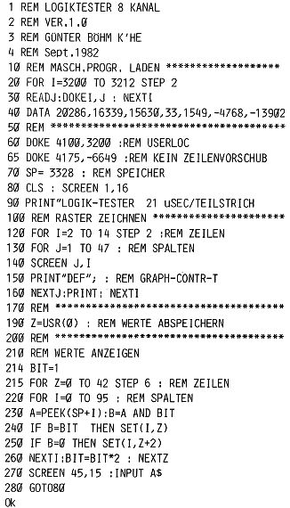

Nascom Journal |
September 1982 · Ausgabe 9 |
Folgendes Programm habe ich aus einer Notlage heraus geschrieben, als nämlich bei der Arbeit am Interface für die Video-Kamera mein Oszilloskop den Geist aufgab. Vorher hatte ich schon mit dem Gedanken gespielt, etwas ähnliches zu erstellen, denn mit meinem 1-Kanal-Gerät war es nie möglich, den Verlauf zweier TTL-Signale gleichzeitig zu erfassen.
Aus Zeitnot wurde das Programm schnell in Basic geschrieben; dies ist schon sein erster Nachteil, denn es dauert eine ganze Weile, bis sich das Bild aufgebaut hat. Der zweite Nachteil ist, daß der verwendete PIO-Port im Abstand von min. etwa 8 usec abgetastet werden kann (der Rechner schafft es bei 2 MHz. einfach nicht schneller), und so die dargestellte Länge der Signale verfälscht wird. Eine Verbesserung ergäbe der Einbau einer Möglichkeit, den Start der Abtastung zu triggern (vielleicht durch Interrupt). Möglicherweise wird ein Leser durch diesen Artikel angeregt, eine verbesserte Version in Maschinensprache zu schreiben.
Jedenfalls hat mir das Programm geholfen, einige Zeit ohne Oszilloskop auszukommen; und in Zukunft wird es wohl bei solchen Gelegenheiten zum Einsatz kommen, bei denen es nicht so sehr auf die exakte Darstellung der Impulslängen ankommt, sondern mehr auf die Anzeige des Pegels vieler TTL-Signale zu einem bestimmten Zeitpunkt.
In der abgedruckten Fassung ist die kleinste Zeiteinheit 10,5 usec. So wird zwischen 2 Teilstrichen eine Periode von 21 usec dargestellt. Die maximal meßbare Frequenz beträgt somit 47,6 KHz, die langsamste Frequenz, von der noch eine vollständige Periode abgebildet wird, beträgt 1 KHz.
Die Anwendung ist einfach: an einem Port der PIO werden bis zu 8 Leitungen angeschlossen, die TTL-Pegel führen. Nach RUN startet die erste Messung. Wenn der Bildschirm vollgeschrieben ist, wartet das Programm auf das Drücken einer beliebigen Taste, um die nächste Messung durchzuführen.
Im Basic-Listing wird Port 3D/3F verwendet. Um Port B der Grundplatine verwenden zu können, müßten die zweite und dritte DATA-Anweisung in Zeile 40 durch 2003 und 1294 ersetzt werden.
Für die Benutzer anderer Systeme ist das Maschinenprogramm im Assembler aufgelistet. Dies kann durch POKE-Befehle (anstelle der Nascom-eigenen DOKE) an einen beliebigen Speicherplatz geladen werden, der für Maschinenunterprogramme benutzt werden kann. Aufgerufen wird die Routine in Zeile 190 durch die USR-Funktion.
Zeile 60 gibt dem Programm an, wo das Unterprogramm abgelegt ist, Zeile 65 verhindert einen Zeilenvorschub , wenn das Programm am Ende der Anzeige auf eine Eingabe wartet.

| Seite 10 von 28 |
|---|